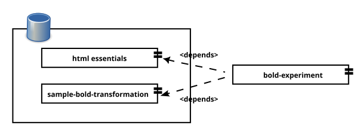

We are going to introduce Ivy and Arousa with a basic example. The purpose is to evaluate how easy it is to work with Arousa and how much effort involve manage dependencies with Ivy.
The example will use a pair of external xslts, one that convert the text nodes to bold, and other that wraps the content into html.

We are going to open the bold experiment folder from the Arousa MARKUPUK23 examples and remove the bold-experiment subfolder.
You can navigate now to the sample-bold-transformation folder and run:
$ arousa publish-dependency
At this point you probably have published the first ivy dependency. We are going to create now a project, using the default template, and name it “bold-experiment” with the following command.
$ arousa template-project bold-experiment
In this example we need to adjust the path of the repository (in order to use the previously published example dependencies). Modify the “demo.samples.repository.root” value of the conf/arousa-ivy-settings.xml to fit your location of the examples path, it should look similar to this:
<property
name="demo.samples.repository.root"
value="C:/Users/john/arousaws/arousa-examples/
bold experiment/repository" />Now we are going to add the dependencies to the conf/arousa-ivy.xml file.
<dependency org="org.markupuk.2x023.arousa.samples" name="sample-bold-transformation" rev="1.0" > <artifact name="sample-bold-transformation" type="packaged" ext="zip" /> </dependency> <dependency org="net.vionta.templates.html" name="html-essentials" rev="1.0" > <artifact name="html-essentials" type="packaged" ext="zip" /> </dependency>
You could instead just copy the file (from the commands notes folder).
cp commands/arousa-ivy.xml bold-experiment/conf/arousa-ivy.xml
After adding the dependencies declaration, and setting the repository path, you can retrieve the dependencies with the following command.
$ arousa update-dependencies
You should see on the screen the Ivy report while it is retrieving the dependencies. At this point, the dependencies should show on the deps folder of your project. We are ready to add the Xslt steps to the build target of the build.xml.
<xslt style="deps/sample-bold-transformation/xsl/bold-demo.xsl" basedir="test/data" destdir="build" includes="*.xml" extension=".xml" /> <xslt style="deps/html-essentials/xsl/html-report-basic-structure.xsl" basedir="build" destdir="build" includes="*.xml" extension=".html" />
Now we can add some test data to a file.
$ mkdir -p test/data $ echo '<div>This text will be bold</div>' > test/data/basic_test.xml
And finally run the build target.
$ ant build
And that’s all, we have prepared a small project, configured Ivy, declared and retrieved the dependencies and executed the transformations.